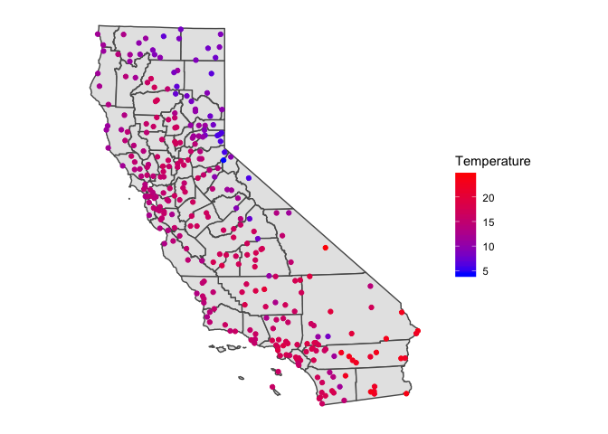
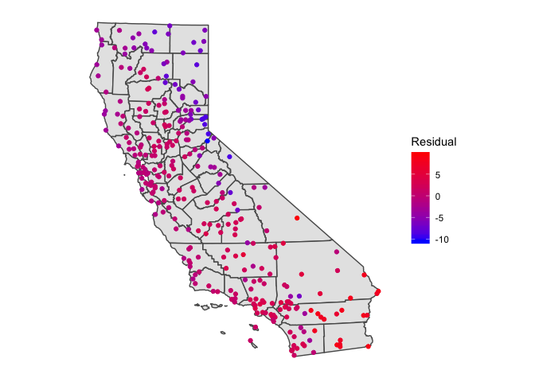
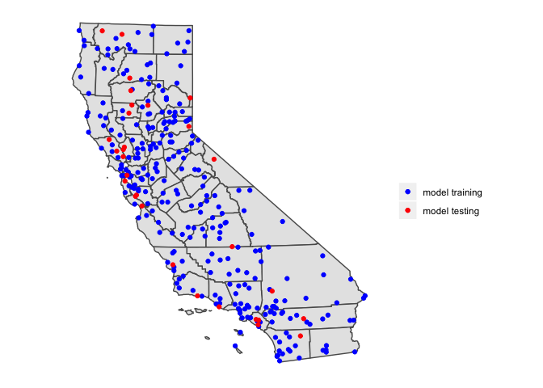
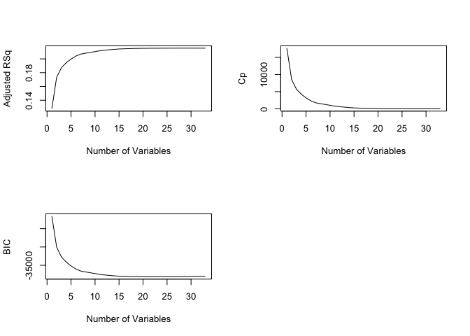
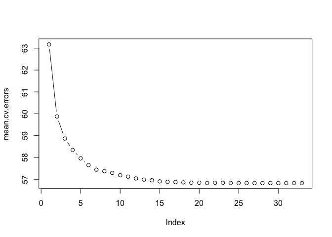

In the last lab guide, we learned how to partition our data into training and testing sets to estimate the predictive quality of a regression model. In this lab, we extend this knowledge by going through the resampling techniques described in ISRL Ch. 5. We further expand our statistical toolkit by exploring methods that will allow us to choose the best set of predictors based on predictive quality. These methods are discussed in ISLR Ch 6. Although discussed in separate chapters, these methods are intimately tied. You run a Ch. 6 method to give a set of possible models and then you run a Ch. 5 method to give you a metric for determining which model gives the best predictive fit.
The objectives of this lab are as follows
To help us accomplish objective 1, we will use temperature data for California weather stations. To help us accomplish objectives 2-4, we will use a data set from the previous lab - 2017 Behavioral Risk Factor Surveillance System (BRFSS). Download the data for this lab guide from Canvas in the Labs and Assignments Week 8 folder. All the data are zipped into the file resampling.zip.
We’ll be using several new packages in this lab. First, install them if you haven’t already.
if (!require("dismo")) install.packages("dismo")
if (!require("leaps")) install.packages("leaps")
if (!require("glmnet")) install.packages("glmnet")Second, load all necessary packages.
library(sf)
library(broom)
library(dismo)
library(leaps)
library(glmnet)
library(tidyverse)
To demonstrate cross validation, we’ll be relying on a dataset containing monthly temperature data for weather stations in California. Bring in the dataset temperature.csv
ca.temp <- read_csv("temperature.csv")The file contains the average monthly temperature in Celsius. Let’s take mean monthly temperature, which will be our response variable.
ca.temp <- mutate(ca.temp, temp = rowMeans(dplyr::select(ca.temp, JAN:DEC)))Let’s map the stations. We have longitude and latitude. First, we need to convert ca.temp into a spatial sf object. Here, we use the function st_as_sf() and use an appropriate coordinate reference system.
ca.temp.sf <- st_as_sf(ca.temp, coords = c("LONG", "LAT"), crs ="+proj=longlat +datum=NAD83 +ellps=GRS80")Let’s then bring in a California counties layer.
cacounties <- st_read("counties_2000.shp")Next, we need to transform both layers to a planar CRS (Teale Albers in this case) to assure that the computations we perform later are OK. That is, we want to avoid interpreting angles as if they were planar coordinates.
st_crs(ca.temp.sf)## Coordinate Reference System:
## EPSG: 4269
## proj4string: "+proj=longlat +ellps=GRS80 +towgs84=0,0,0,0,0,0,0 +no_defs"st_crs(cacounties)## Coordinate Reference System:
## EPSG: 4269
## proj4string: "+proj=longlat +ellps=GRS80 +towgs84=0,0,0,0,0,0,0 +no_defs"TA <- crs(" +proj=aea +lat_1=34 +lat_2=40.5 +lat_0=0 +lon_0=-120 +x_0=0
+y_0=-4000000 +datum=NAD83 +units=m +no_defs +ellps=GRS80 +towgs84=0,0,0")
ca.temp.sf<- st_transform(ca.temp.sf, TA)
cacounties<- st_transform(cacounties, TA)
st_crs(ca.temp.sf)## Coordinate Reference System:
## No EPSG code
## proj4string: "+proj=aea +lat_1=34 +lat_2=40.5 +lat_0=0 +lon_0=-120 +x_0=0 +y_0=-4000000 +ellps=GRS80 +towgs84=0,0,0,0,0,0,0 +units=m +no_defs"Finally, mapification happens.
ggplot(data = cacounties) +geom_sf() +
geom_sf(data = ca.temp.sf, aes(color = temp)) +
scale_color_gradient(low = "blue", high = "red", name ="Temperature") +
theme( axis.text = element_blank(),
axis.ticks = element_blank(),
panel.background = element_blank())
Now on to the modelling!!
The goal is to create a model that predicts temperature. We first run a linear regression model with no independent variables (known as a null model). Such a model uses the mean annual temperature across the stations as an estimator of temperature at every location.
null <- lm(temp ~ 1, data = ca.temp.sf)Save the predicted values (which is just the mean) and the residuals (observed - predicted) into our data frame. The function predict() gives us the predicted values and the function resid() gives us the residuals.
ca.temp.sf <- mutate(ca.temp.sf, nullpred = predict(null), nullresid = resid(null))And we make a map of the residuals.
ggplot(data = cacounties) +geom_sf() +
geom_sf(data = ca.temp.sf, aes(color = nullresid)) +
scale_color_gradient(low = "blue", high = "red", name ="Residual") +
theme( axis.text = element_blank(),
axis.ticks = element_blank(),
panel.background = element_blank())
This does not look very good. There are large differences. Moreover, there is some spatial autocorrelation in the residuals, indicating that some places have better predictions than others.
Because we are now in prediction land, we are very concerned about fit. A very important measure of fit is the Root Mean Squared Error (RMSE). Let’s define an RMSE function so we can compute RMSE for all the models we run in this lab.
RMSE <- function(observed, predicted) {
sqrt(mean((predicted - observed)^2, na.rm=TRUE))
}Next, we calculate the RMSE of the null model.
RMSE(ca.temp.sf$temp, ca.temp.sf$nullpred)## [1] 3.722373
We can probably do better than use the mean to predict temperature. Let’s try a linear regression model with independent variables. The only meaningful attribute we have in our ca.temp.sf dataset is the geographic coordinates, i.e. the location of each weather station. A regression of any variable on geographic coordinates is known as a trend surface model, which we’ll cover in more detail next week (Ch. 9 in OSU). But, for now, let’s regress temperature on a station’s longitude and latitude. Let’s also compute an error rate using k-cross validation, which is described in section 5.1.3 in ISLR.
We first need to cut up the data set into k sets. Let’s set k = 10. We can use the function kfold(), which is a part of the dismo package, to conveniently partition our data into k folds. For replication purposes, I set.seed() because kfold() randomly partitions the data set.
set.seed(5162016)
k <- kfold(ca.temp.sf, k = 10)
table(k)## k
## 1 2 3 4 5 6 7 8 9 10
## 30 30 31 30 30 30 30 31 30 30The output shows that 30 observations are in the test set of the first fold, 30 different observations are in the second fold, 31 different observations are in the third fold, and so on. Let’s visualize what we have done for one fold:
test <- ca.temp.sf[k==1, ]
train <- ca.temp.sf[k!=1, ]
ggplot(data = cacounties) +geom_sf() +
geom_sf(data = train, aes(color = "blue"), show.legend = "point") +
geom_sf(data = test, aes(color = "red"), show.legend = "point") +
scale_color_manual(labels = c("model training", "model testing"), values = c("blue", "red"), name = "") +
theme( axis.text = element_blank(),
axis.ticks = element_blank(),
panel.background = element_blank())
Let’s run a linear regression on our first fold. First, save the coordinates and temperature into a single data frame.
df <- data.frame(st_coordinates(train), temp=train$temp)Then fit a linear regression model to these data. We’ll use glm().
m <- glm(temp ~ X+Y, data=df)
summary(m)##
## Call:
## glm(formula = temp ~ X + Y, data = df)
##
## Deviance Residuals:
## Min 1Q Median 3Q Max
## -9.4411 -1.5265 0.1872 1.7846 8.9485
##
## Coefficients:
## Estimate Std. Error t value Pr(>|t|)
## (Intercept) 1.390e+01 1.984e-01 70.055 < 2e-16 ***
## X 5.125e-07 1.428e-06 0.359 0.72
## Y -8.464e-06 1.025e-06 -8.257 6.8e-15 ***
## ---
## Signif. codes: 0 '***' 0.001 '**' 0.01 '*' 0.05 '.' 0.1 ' ' 1
##
## (Dispersion parameter for gaussian family taken to be 7.891022)
##
## Null deviance: 3803.0 on 271 degrees of freedom
## Residual deviance: 2122.7 on 269 degrees of freedom
## AIC: 1338.8
##
## Number of Fisher Scoring iterations: 2Question 1: According to this model. How much does the temperature in California change if you travel 500 miles to the north?
We can now estimate temperature values for our hold-out (test) sample
v <- data.frame(st_coordinates(test))
p <- predict(m, v)
#First several predictions
head(p)## 1 2 3 4 5 6
## 18.49892 17.27353 17.99420 16.04129 13.71275 12.06281And then evaluate the results by comparing them with the known values for these locations using the RMSE() function we created above
RMSE(p, test$temp)## [1] 3.289749This looks better than the RMSE for the null (because it is smaller). But, we have to do this for all 10 folds. We can accomplish this by running a forgotten friend the for loop.
r <- rep(NA,5)
for (i in 1:10) {
test <- ca.temp.sf[k==i, ]
train <- ca.temp.sf[k!=i, ]
df <- data.frame(st_coordinates(train), temp=train$temp)
m <- glm(temp ~ ., data=df)
v <- data.frame(st_coordinates(test))
p <- predict(m, v)
r[i] <- RMSE(p, test$temp)
}The result is the RMSE for each of the 10 folds.
r## [1] 3.289749 2.248640 3.043732 3.422114 2.533438 2.819896 2.794843 2.838339
## [9] 3.011162 2.470722We then calculate the average, which is equation 5.3 shown on ISLR page 181 (we show the RMSE, ISLR shows the MSE, the only difference being MSE is squared).
mean(r)## [1] 2.847263The model is not great, but it did capture something, and it is better than the null model.
We did the k-fold cross-validation technique described in ISLR 5.1.3. Now do the leave-one-out cross-validation technique described in 5.1.2 and 5.3.2. You can use the function cv.glm(), which is a part of the boot package. See page 192 in ISLR for a demonstration of this function. You don’t need to separate the data set into training and test data sets as cv.glm() will automatically do that for you. So, you can save the coordinates and the temperature for the entire set of locations in a data frame
df2 <- data.frame(st_coordinates(ca.temp.sf), temp = ca.temp.sf$temp)and go from there
Question 2: What is the RMSE using leave-one-out cross validation?
The California temperature data is not that interesting when trying to show how to run subset selection techniques in R because we don’t have any attributes outside of the stations’ geographic coordinates. Subset selection is best illustrated using a model with many potential covariates. As such, let’s turn back to a data set we ended in our prior lab, 2017 BRFSS data on individual health. Bring the data in.
brfss17 <- read_csv("brfss17.csv")Here, we’ll predict the numeric variable physhlth, which gives the number of days in the past month that respondents felt that they were not in good physical health. Our independent variables are age agec, gender male, educational attainment educ, race/ethnicity race_eth, whether the individual indicates they smoke, employment status employ, marital status marst, BMI bmi, health insurance ins, income inc, and indicators of whether the individual has high blood pressure bphigh, high cholesterol toldhi, and was ever diagnosed with a heart attack cvdinfr, a Stroke cvdstrk, Asthma asthma, Arthritis havarth, or Diabetes diabete. A record layout of the data can be found here. The goal is to find the best set of predictors for physhlth based on predictive quality.
The purpose of forward and backward stepwise selection is to iteratively fit a regression model by adding predictors one-by-one to a model with no variables (known as a null model) or subtracting predictors one-by-one from a full model (all predictors are included). The goal is to find the best combination of predictors, where best is based on some measure of predictive quality.
We can use the regsubsets() function, which is a part of the leaps package, to perform the best subset selection methods described in ISLR Ch 6.1. Let’s first run a forward stepwise selection (ISLR 6.1.2) to find the best predictors for poor physical health days. The syntax is the same as lm(), but we add the argument method = "forward"
regfit1.fwd <- regsubsets(physhlth ~ bmi + race_eth + agec + male + smoke + educ + inc + employ + marst + ins + bphigh + toldhi + cvdinfr + cvdstrk + asthma + havarth + diabete, data = brfss17, method = "forward")A summary of results.
summary(regfit1.fwd)The regsubsets() function identifies the best model that contains a given number of predictors, where best is quantified as the lowest residual sum of squares (RSS). An asterisk indicates that a given variable is included in the corresponding best model. For example, the summary output indicates that the best two-variable model contains employunable and havarth. When interpreting these results, remember that categorical/qualitative variables are separated into dummy variables. Therefore, the variables employnilf, employretired and employunable correspond to separate dummies for the categories “not in labor force”, “retired”, and “unable to work” (the category “Employed” is the reference) in the employ variable. You can extract the coefficients and their values for the best 2-variable model by using the coef() function as follows
coef(regfit1.fwd, 2)## (Intercept) employunable havarth
## 2.141179 11.496099 3.955133By default, the function only reports results up to the best eight-variable model, but you can use the nvmax option to return as many variables as desired. For example, let’s try a 33 variable model, with 33 representing the max number of predictors we can include for our case
regfit2.fwd <- regsubsets(physhlth ~ bmi + race_eth + agec + male + smoke + educ + inc + employ + marst + ins + bphigh + toldhi + cvdinfr + cvdstrk + asthma + havarth + diabete, data = brfss17, method = "forward", nvmax = 33)After getting the best model for each given number of predictors, we need to then select the best model across all sets. Following ISLR, we can examine the adjusted R2, Cp and the Bayesian Information Criterion (BIC) from the summary() output. Let’s examine the adjusted R2, which is discussed on page 212 in ISLR.
regfit2.fwd.summary <- summary(regfit2.fwd)
regfit2.fwd.summary$adjr2## [1] 0.1277702 0.1732549 0.1872198 0.1944227 0.1997421 0.2040115 0.2068957
## [8] 0.2081920 0.2093504 0.2105600 0.2117409 0.2125584 0.2132344 0.2138314
## [15] 0.2143430 0.2146413 0.2148545 0.2150567 0.2151948 0.2152931 0.2153752
## [22] 0.2154121 0.2154404 0.2154770 0.2155044 0.2155138 0.2155498 0.2155559
## [29] 0.2155538 0.2155509 0.2155471 0.2155545 0.2155499We see that the adjusted R2 increases from 12.8 with one variable to 21.6 with all variables.
We can look at all fit indicators to decide which model is the best. Plotting adjusted R2, Cp, and BIC for all of the models at once can help us decide which model to select. Note the type="l" option tells R to connect the plotted points with lines.
par(mfrow = c(2,2))
plot(regfit2.fwd.summary$adjr2 , xlab =" Number of Variables ", ylab =" Adjusted RSq ", type ="l")
plot(regfit2.fwd.summary$cp, xlab =" Number of Variables ", ylab ="Cp", type ='l')
plot(regfit2.fwd.summary$bic ,xlab =" Number of Variables ",ylab =" BIC ", type ='l')
Question 3: Which model does the adjusted R2 indicate is the best? In your answer, identify the specific variables that are included in the best model.
Question 4: Run backwards stepwise regression. Which model is identified as the best model based on adjusted R2? In your answer, identify the specific variables that are included in the best model.
We just saw that it is possible to choose among a set of models of different sizes using BIC, adjusted R2 and other best fit metrics. We will now consider how to do this within a cross-validation framework. Here, you will use cross-validation to find the best model with the lowest validation error. This will combine the methods from ISLR Chapter 5 and Chapter 6, which is described on page 213 in ISLR.
We will choose among the best models of different sizes using cross validation. This approach is somewhat involved, as we must perform subset selection within each of the k training sets. Despite this, subsetting in R makes this job quite easy. First, we create a vector that allocates each observation to one of k = 10 folds using the fabulous function kfold()
set.seed(1234)
brfss17 <- mutate(brfss17, folds = kfold(brfss17, k = 10))
table(brfss17$folds)##
## 1 2 3 4 5 6 7 8 9 10
## 15811 15810 15811 15811 15811 15810 15811 15811 15810 15811and we create a matrix in which we will store the results. Rows represent the k = 10 folds and columns represent the complete set of variables (33) we are including in the model.
k=10
cv.errors = matrix(NA ,k,33, dimnames =list(NULL , paste (1:33) ))Now we write a for loop that performs cross-validation. The loop is similar to the one we used to do cross-validation on California temperature. In the jth fold, the elements of folds that equal j are in the test (or validation) set, and the remainder are in the training set. We make our predictions for each model size, compute the test errors on the appropriate subset, and store them in the appropriate slot in the matrix cv.errors.
There is a complication: there is no predict() method for regsubsets() like there is for glm() or lm(). Fortunately, ISLR created a predict function for us to use for regsubsets() objects. I copy and paste their code below. If you would like to learn how this function was created, see ISLR 6.5.3.
predict.regsubsets = function(object ,newdata ,id ,...) {
form =as.formula(object$call[[2]])
mat = model.matrix(form, newdata )
coefi =coef(object ,id=id)
xvars = names(coefi)
mat [, xvars ]%*%coefi
}Now the for loop.
for (j in 1:k){
best.fit = regsubsets(physhlth ~ bmi + race_eth + agec + male + smoke + educ + inc + employ + marst + ins + bphigh + toldhi + cvdinfr + cvdstrk + asthma + havarth + diabete,
data = filter(brfss17, folds != j), method = "forward", nvmax = 33)
for (i in 1:33) {
pred= predict(best.fit , filter(brfss17, folds == j), id=i)
pred2 <- (dplyr::select(filter(brfss17, folds == j), physhlth) - pred)^2
cv.errors[j,i]= mean(pred2$physhlth)
}
}This has given us a 10×33 matrix, of which the (i, j)th element corresponds to the test MSE for the ith cross-validation fold for the best j-variable model. We use the apply() function to average over the columns of this matrix in order to obtain a vector for which the jth element is the cross-validation error for the j-variable model
mean.cv.errors =apply(cv.errors ,2, mean)
mean.cv.errors## 1 2 3 4 5 6 7 8
## 63.17279 59.87841 58.86750 58.34605 57.96128 57.65206 57.44342 57.37276
## 9 10 11 12 13 14 15 16
## 57.29870 57.19102 57.12315 57.04165 56.98713 56.95636 56.90768 56.88672
## 17 18 19 20 21 22 23 24
## 56.87541 56.86083 56.84728 56.84648 56.83535 56.84263 56.84084 56.83513
## 25 26 27 28 29 30 31 32
## 56.83088 56.83287 56.82971 56.82791 56.82835 56.82959 56.83118 56.83100
## 33
## 56.83043The model with the lowest error rate is
min(mean.cv.errors)## [1] 56.82791which corresponds to the 28-variable model. Let’s plot to visualize
par(mfrow =c(1 ,1))
plot( mean.cv.errors , type='b')
Question 5: What are the variables and their coefficient values associated with the 28-variable model?
Shrinkage? Like laundry? Not quite.
The basis behind shrinkage methods is to, well, shrink the coefficients towards 0. Why would shrunk coefficients be better? This introduces bias, but may significantly decrease the variance of the estimates. If the latter effect is larger, this would decrease the test error. The driving force behind variable selection: the need for greater accuracy in prediction. In a prediction context, there is less concern about the values of the components on the right-hand side, rather interest is on the total contribution. We’ll cover two shrinkage methods: ridge and lasso regression. If you want to dig deep into the math, check ISLR Ch. 6.2. Otherwise, follow the conceptual pathway rather than getting too deep (or lost) in the weeds.
We can fit ridge and lasso regression models using the function glmnet() which is a part of the glmnet package. This function has slightly different syntax from other model-fitting functions that we have encountered thus far in this class (e.g. lm(), glm(), lagsarlm()). In particular, we must pass in a matrix x of independent variables rather than a data frame as well as a y vector.
The model.matrix() function is particularly useful for creating x; not only does it produce a matrix corresponding to the 33 predictors but it also automatically transforms any qualitative variables into dummy variables. The latter property is important because glmnet() can only take numerical, quantitative inputs. Create x using model.matrix() and set y as the response variable brfss17$physhlth.
x <- model.matrix(physhlth ~., dplyr::select(brfss17, physhlth, bmi, race_eth, agec, male, smoke , educ, inc, employ, marst, ins, bphigh, toldhi, cvdinfr, cvdstrk, asthma, havarth, diabete))[, -1]
y <- brfss17$physhlthWe’ve got our pieces to plug into glmnet(). The function has an alpha argument that determines what type of model is fit. If alpha=0 then a ridge regression model is fit, and if alpha=1 then a lasso model is fit. We also need to specify the argument lambda.
grid <-10^seq(10,-2, length =100)
regfit.ridge = glmnet(x,y,alpha =0, lambda =grid )Recall from ISLR 6.2.3, lambda is our key tuning parameter. By default the glmnet() function performs ridge regression for an automatically selected range of lambda values. However, here we have chosen to implement the function over a grid of 100 values ranging from lambda = 1010 to lambda = 10−2. As we will see, we can also compute model fits for a particular value of lambda that is not one of the original grid values. Note that by default, the glmnet() function standardizes the variables so that they are on the same scale. To turn off this default setting, use the argument standardize = FALSE.
Associated with each value of lambda is a vector of ridge regression coefficients, stored in a matrix that can be accessed by coef(). In this case, it is a 34×100 matrix, with 34 rows (one for each predictor, plus an intercept) and 100 columns (one for each value of lambda).
dim(coef(regfit.ridge))## [1] 34 100We expect the coefficient estimates to be much smaller when a large value of lambda is used, as compared to when a small value of lambda is used. These are the coefficients when lambda = 11498
regfit.ridge$lambda[50]## [1] 11497.57coef(regfit.ridge)[,50]## (Intercept) bmi race_ethnh black
## 4.084313e+00 1.268837e-04 2.626554e-04
## race_ethnh multirace race_ethnh other race_ethnhwhite
## 1.066839e-03 -3.761764e-04 -2.111790e-04
## agec(24,39] agec(39,59] agec(59,79]
## -1.408315e-03 -4.585996e-06 8.351994e-04
## agec(79,99] maleMale smokeFormer
## 1.053666e-03 -6.639874e-04 6.756729e-04
## smokeNeverSmoked educ1somehs educ2hsgrad
## -1.428837e-03 2.575934e-03 9.878735e-04
## educ3somecol educ4colgrad inc
## 5.819408e-04 -1.629427e-03 -1.103627e-03
## employnilf employretired employunable
## 3.085549e-04 7.601816e-04 9.529839e-03
## marstdivorced marstmarried marstnm
## 1.411200e-03 -1.160753e-03 -3.079830e-04
## marstseparated marstwidowed ins
## 2.114507e-03 1.287844e-03 -2.362022e-05
## bphigh toldhi cvdinfr
## 2.071257e-03 1.553035e-03 4.122153e-03
## cvdstrk asthma havarth
## 4.690407e-03 2.345151e-03 3.689490e-03
## diabete
## 3.111607e-03In contrast, here are the coefficients when lambda = 705.
regfit.ridge$lambda[60]## [1] 705.4802coef(regfit.ridge)[,60]## (Intercept) bmi race_ethnh black
## 4.0504905434 0.0020005999 0.0037397803
## race_ethnh multirace race_ethnh other race_ethnhwhite
## 0.0169757526 -0.0057351102 -0.0031814796
## agec(24,39] agec(39,59] agec(59,79]
## -0.0218565403 0.0002131867 0.0128217695
## agec(79,99] maleMale smokeFormer
## 0.0162648940 -0.0105069817 0.0103408837
## smokeNeverSmoked educ1somehs educ2hsgrad
## -0.0224062522 0.0404244624 0.0153098275
## educ3somecol educ4colgrad inc
## 0.0090557469 -0.0254009094 -0.0174243586
## employnilf employretired employunable
## 0.0051264463 0.0116170232 0.1521595719
## marstdivorced marstmarried marstnm
## 0.0220844534 -0.0180530037 -0.0048032994
## marstseparated marstwidowed ins
## 0.0333203184 0.0197562125 -0.0003278925
## bphigh toldhi cvdinfr
## 0.0324397431 0.0243132571 0.0651214899
## cvdstrk asthma havarth
## 0.0741552994 0.0373256610 0.0585609896
## diabete
## 0.0490685846OK, so which lambda do we go with? In general, instead of arbitrarily choosing a lambda, it would be better to use our new best pal cross-validation to choose the value of this tuning parameter. This is described on page 227 in ISLR. We can do this using the built-in cross-validation function, cv.glmnet(). By default, the function cv.glmnet() performs ten-fold cross-validation, though this can be changed using the argument folds. Note that we set a random seed first so our results will be reproducible, because the choice of the cross-validation folds is random.
set.seed(1234)
cv.out =cv.glmnet(x,y, alpha =0, lambda = grid)
bestlam =cv.out$lambda.min
bestlam## [1] 0.03053856We see that the value of lambda that results in the smallest cross-validation error is 0.03053856.
We’ve got our best lambda, now we fit the ridge regression.
out <- glmnet(x,y,alpha =0, lambda = bestlam)The ridge regression coefficients for our new value of lambda is
coef(out)## 34 x 1 sparse Matrix of class "dgCMatrix"
## s0
## (Intercept) 2.830499147
## bmi 0.047532909
## race_ethnh black -0.755931016
## race_ethnh multirace 0.594441633
## race_ethnh other 0.089154005
## race_ethnhwhite 0.198880924
## agec(24,39] 0.446930184
## agec(39,59] 0.535009679
## agec(59,79] -0.146020858
## agec(79,99] 0.074366529
## maleMale -0.256979833
## smokeFormer -0.581880096
## smokeNeverSmoked -0.948514406
## educ1somehs 0.002260339
## educ2hsgrad -0.180086678
## educ3somecol -0.003100523
## educ4colgrad -0.202204595
## inc -0.533779319
## employnilf 1.265765977
## employretired 1.010321146
## employunable 9.768290932
## marstdivorced 0.031915815
## marstmarried -0.269647318
## marstnm -0.322224688
## marstseparated 0.339368048
## marstwidowed -0.494083775
## ins 0.065772033
## bphigh 0.522395761
## toldhi 0.298632337
## cvdinfr 2.226214922
## cvdstrk 2.276251323
## asthma 1.499765561
## havarth 2.918022579
## diabete 1.488135575Unlike stepwise regression, which controls the complexity of the model by restricting the number of predictors, ridge regression keeps all of the predictor variables in the model, and shrinks the coefficients toward zero.
The above procedure uses cross-validation to decide which lambda to choose. But what if you wanted to decide whether ridge regression is better than our other shrinkage method, the lasso? You can separate your data set into training and test sets, run each model on the training set, and then calculate RMSE or MSE using the test sets. ISLR does this on page 253-255 in case you are curious to see how this is done in R.
Question 6: What are the coefficient values when you run a Lasso regression?
Website created and maintained by Noli Brazil